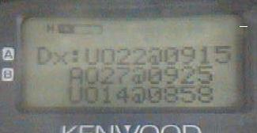
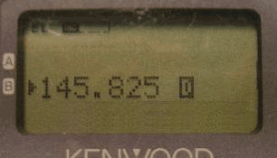
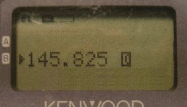
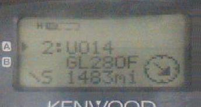
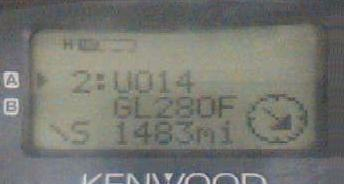

Satellite Simulated Emergency Test

 US Naval Academy Satellite Lab
US Naval Academy Satellite Lab
Bob Bruninga, WB4APR
Satellite Simulated Emergency Test
US Naval Academy Satellite Lab
Bob Bruninga, WB4APR
NOTE! . This SSET initiative is an un-official AMSAT event to routinely demonstrate our emergency preparedness.
OBJECTIVE: . To demonstrate the ability of any ham radio
operator anywhere in the world to use only a VHF or UHF radio and/or a packet TNC
to send an emergency message EMAIL or Voice check-in via amateur satellite. This
page is in reverse-chronological order. New stuff at the top.
DECEMBER 2008 SSET: . The next SSET is 12 to 15 Dec 2008 when PCSAT-1 will be in
full sun and can be commanded to normal operations. DUring this period we will also have
ISS and GO32 operational (we hope) for a total of as many as 18 passes per day for
making contacts or sending your SSET Email. (see below)
FEBRUARY 2008 SSET: . The last SSET was 9 to 18 Feb 08 when PCSAT was in full sun.
NOVEMBER 07 SSET: . During early November to the 20th, both
PCSAT,
ANDE,
GO32, and
ISS
were all available. . The
FINDU downlink page was showing the last 75 station buffer was filling
in only 12 hours. . During a weekend,
we saw over 75 users per 24 hour period that exchanged about 250 messages a day
plus 23 SSET emails. This tapered to about 50 a day during the week with
15 more SSET emails and 3 via ISS.
AMSAT EmComm! . AMSAT-NA announced new Geostationary Satellite
Opportunities at the October 2007
AMSAT conference with possible support from the government due to Ham Radio's
long standing Emergency Communications support mission. Apparently if we can
build a communications payload for emergency response
as a piggyback payload, then we might get a ride to GEO. . This suggests
that AMSAT needs to establish a routine Satellite - Simulated
Emeregency Test plan. And to exercise it on a routine basis, probably once a month
to demonstrate our emergency response capability. . We might need this data to
show our committment to this operating scenario . . . Emergency operations
in the field. . Remember, the cell phone towers
all die in 8 hours or less.
But getting an emergency message out of an afffected area is easy
using only handheld satellite HT's as shown below:
. . .
The SSET Test could run on all of our satellites, not just the APRS birds.
. The objective is to take check-in's from as many
field portable stations as possible reporting their location, and status and ability to
link back into established infrastructure (internet email).:
Using only a Handheld! You can send your Satellite EMail from the Kenwood
TH-D7(g) shown above, or the new Yaesu VX-8R (or the TM-D700 and 710 APRS mobile radios)
via
PCSAT-1,
ISS, or
GO32.
. . Just press the MSG button, select
INPUT on the MSG Menu, enter EMAIL as the address,
and make the first text of the message be an email address
followed by your message. . In the example below, an EMAIL to A3XYZ@AMSAT.ORG
says
OK in OceanCity with HT & whip!. .
If your email is digipeated via the satellite, then you will see MY MESSAGE
flashed on the screen indicating success. . Now, all we need is a plan, a schedule, and some volulnteer SSET net-controls to
take check-in's on the appropriate birds. . Then we need a coordinating team
to assemble the results into a meaningful format for consideration.
. And that is only a hint of what these HT's can do
(see event data entry example).
ANY TNC WILL DO: . If you do not have an APRS radio or mobile,
you do not even need APRS to participate in this test. You can use any
packet TNC or packet softare and any radio to send your Simulated Emergency Test
check in. . It is trivial to do. . Just type your email into your BTEXT and send.
See below:
APRS EMAIL Procedures: . Since 1998 or so, APRS has had an interface into the global internet
email system via the WU2Z Email engine operated by the Sproul Brothers. This allows any
APRS station to send a one-line email from anywhere to anywhere as shown below:
By sending the SSET email directly to yourself, you get the feedback that it
was successful.
AMSAT OPERATING AREAS: . Users in different parts of the world have vastly different
experiences with the satellites based on the number of other users in the footprint. .
Those in the USA and Europe find the birds very crowded. . While those in more remote
areas find the satellites very easy to access. . The map below tries to distinguish those
areas. . Although getting into an FM voice bird is challenging in some areas, getting
into one of the APRS birds is easy because of the brevity of packet.
PORTABLE AND MOBILE OPERATIONS: . AMSAT members need to be prepared to operate
portable and/or mobile. . We have many satellites that we can be worked mobile, but too
many users have the perceived misconception that a PC is needed for
predictions for every pass. .
Simply stated, we don't always need a PC, for some basic satellite
communications. All satellites have very predictable pass times that are very
repeatable as shown below.
ECHO FOR EXAMPLE: . AO-51 is an easy FM satelilte that can be worked from the
mobile or handheld field station.
. As shown above, it has a repeating ground track which is every 5 days. A simple
paper table on the dashboard, like the one below, can predict all passes and will
be good for at least two months and not off by more than 5 minutes after 3 months.
For example, on 10 Feb you count 3 columns to the right of 7 Feb, and see that there
are two moderate passes. The first to the east
is at 0720 EST and the second one, 100 minutes later is 0855 EST to the west.
. If one pass is shown, then it is nearly overhead and there is a lower eastern pass 100
minutes earlier and a western one 100 minutes later.
. If two are shown, then they are both moderate and the
ones that are 100 minutes before and after them will not be in range for a mobile.
. All times shown are the center of the pass and rounded to the nearest 5 minutes,
so show up early.
Your Time Zone Location: .
It is important to visualize where you are located relative to the center of your
time zone. If you are in the eastern edge, then the earlier pass shown or the
prior 100 minute pass will be better for you. If you are to the west of your time
zone, then the later pass will be better for you.
. If you are to the North of your time zone, then the morning pass will be a few minutes
earlier and the evening pass will be a few minutes later.
. If you are to the South, then it will be the opposite.
See: Detail Manual Tracking tips for other Satelites.
MANUAL TRACKING: . The point is, all you need is one pass time, and then you can
predict all future and past passes for that satellite. This is very helpful for
emergency preparedness in the field without a PC. As long as you know the approximate
time of day for your satellite, all you have to do is monitor the satellite
downlink for an hour and a half and
you are guaranteed to hear a pass. From then on, you can predict the
future passes based on your general knowledge of the pass geometry and the number of
minutes earlier or later per day.
LOCAL SATELLITE ALERTS: .
An even better way!
These radios can also display the frequency, doppler, azimuth and distance to any
satellites in view if someone is running
APRSdata.EXE on a PC as a local service in the region.
. This program not only generates Satellite Objects on the front panel of
all local Kenwood Radios, it also sends out every 10 minutes a schedule
of the next 80 minutes of pass predictions.
. The satellites are normal APRS objects, but the schedule is sent as a
DX spot to the DX-LIST in the radios. This way, no one needs a
tracking program, they will receive it live over the air on their radio
front panel as shown below

The first image shows the DX-SPOT list showing that there are three satellites
UO22, AO27 and UO14 coming up in the next 80 minutes and when. . This schedule
is updated every 10 minutes.
. The next two screens are only transmitted when the satellite is in view.
. They show the Range, Azimuth, Uplink and Downlink Frequencies, Doppler
and distance to the satellite. Just perfect for aiming your handheld
antenna. For more details see APRS Satellite Resources.
The above screen shows how this data looks on the screen of the D700.
. It is a little bit busier, since all of the data shows on just the one screen.
EMERGENCY and MOBILE UPLINKS: .
It is easy to get into any of these satelites with your 50W
mobile rig and mobile omni antenna. . Two meters for an uplink has a 9 dB advantage
over the typical UHF downlink. . This can actually be a problem for LIDs that talk
without being able to hear their own downlink. DONT DO IT. Others are using the bird
and you are just showing your ignorance by transmitting on top of them without being
able to hear first. . But when you do hear the bird well, you can know that you
should be able to get in.
RECEIVING THE AO51 and GO32 DOWNLINKS: . This is where the challenge is.
. The UHF downlinks suffer
a 9 dB disadvantage compared to VHF and the satellites are only transmitting
.5 watts or so compared to your 50 watts.
. The combination of these adds up to almost 23 dB of difference
or 200 times stronger uplinks than downlinks. . Fortunately, if you use a 19" vertical
whip in the middle of the roof of your car, it will act like a 3/4 wave antenna on UHF.
.. This gives almost 7 dB gain above 25 degrees where the satellite is also between
6 to 10 dB closer. . So for those middle 3 or 4 minutes of a high elevation pass, the
mobile can be used for satellite contacts.
. The plot below shows how well my vertical 19" whip hears GO32 during the center 1/3rd
of a high elevation pass. Passes below 25 degrees won't decode anything usually.
As shown above, My first test with my D700 and 19" magmount whip on the roof of my car
captured about 150
packets over the center 6 minutes of a high elevation pass.
. Of the three passes in the morning and evening, only the center one will be above 30 degrees.
. But, one day out of every 4, there will be two 30 degree passes instead.
. I was tuning for Doppler.
. Without Doppler tuning
my reception window would be about half that shown for the high elevation pass..
Vertical 19" whip OMNI Satellite Antenna: .
A 19.5" two-meter whip antenna over a ground plane not only works perfectly as
an UPLINK antenna, it is also ideal for the UHF downlink. . On the downlink, it
will provide almost 8 dBi of
gain above 30 degrees where the signal is strongest anyway. See the plot below
comparing the gain of a 1/4 wave whip with a 3/4 wave whip. This is live data
obtained from a 1/4 wave and 3/4 wave whip (scaled to GPS size and using the
GPS constellation over 12 hours to provide all-sky signals):
These plots are the same 19" whip over the center of a ground plane. . The VHF
gain is shown in RED and is the typical gain of a 1/4 wave monopole. . But the
green trace is the gain of the same antenna at UHF where it exhibits about 3 dB
gain for a total of almost 8 dBi for hearing the weak UHF downlinks.
MOBILE SATELITE OPERATIONS: Now that you konw when the satellites are passing
overhead, it makes it east to do some mobile Satellite operations while you are
stuck there in the traffic jams or out on the open road on a trip.
See: Detail Manual Tracking tips for other Satelites.


 

Then just send me a very brief report so that I can keep statistics on
how many SSET checkin's we got during this test.


See other time zones for AO51
See table for GO32
 
